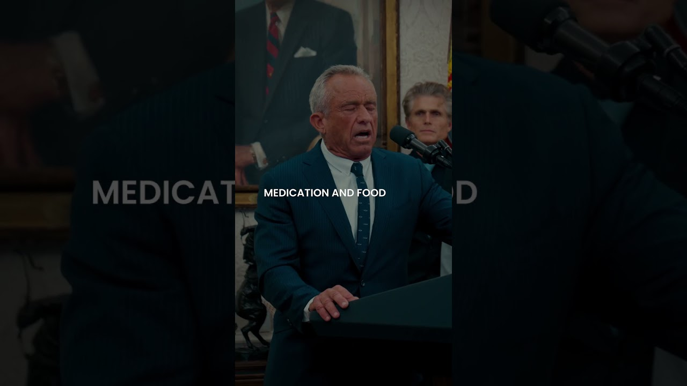

来B站一起耍【Global每日英语简报】
【MAGA时刻，2025年4月25日】
Summary: This week at the White House was highly productive, featuring the Easter egg roll, meetings with veterans and Norway's prime minister, major corporate investments, a ban on artificial food dyes, a task force against anti-Christian bias, and record border security, with more to come next week.
摘要： 本周白宫事务高效推进，包括复活节滚彩蛋活动、与退伍军人及挪威首相的会晤、大型企业投资、禁用人工食用色素、打击反基督教偏见的特别工作组、创纪录的边境安全成果，下周还有更多计划。

⏱️ Estimated Reading Time: 2 min
Hello everybody.
大家好。
It has been a very productive week here at the White House.
这是白宫非常高效的一周。
So, let's roll through it for the MAGA Minute.
现在，让我们快速回顾本周的MAGA时刻。
The president and the first lady hosted the annual Easter egg roll with more than 40,000 guests in attendance from across the country.
总统和第一夫人主持了年度复活节滚彩蛋活动，吸引了来自全国各地的超过4万名宾客参与。
The president welcomed a group of wounded veterans and heroes into the Oval Office and met with the prime minister of Norway at the White House.
总统在椭圆形办公室接待了一群受伤退伍军人和英雄，并在白宫会见了挪威首相。
It was also another big week for investments in the United States.
这也是美国投资领域的又一重要一周。
Bayer, Chevron, Coinbase, Ro, Toyota, GM, and Chobani all announced investments in the United States, opening offices in pouring billions of dollars into creating businesses and American jobs.
拜耳、雪佛龙、Coinbase、Ro、丰田、通用和Chobani均宣布在美投资，开设办事处并投入数十亿美元以创造商业机会和美国就业岗位。
And a major win for the Maha movement, Secretary of Health and Human Services Kennedy announced that eight artificial food dyes would be phased out of medication and food by the end of 2026.
MAGA运动取得重大胜利，卫生与公众服务部长肯尼迪宣布，八种人工食用色素将在2026年底前逐步退出药品和食品。
Attorney General Pam Bondi launched a task force to eradicate anti-Christian bias from our institutions.
司法部长帕姆·邦迪成立特别工作组，旨在消除机构中的反基督教偏见。
Our border continues to be the most secure it has ever been in our nation's history with the Wall Street Journal even touting our massive successes.
我们的边境安全达到国家历史最高水平，《华尔街日报》甚至盛赞这一巨大成就。
Next week marks 100 historic days of the Trump administration.
下周将迎来特朗普政府具有历史意义的100天。
And we have a lot in store for you.
我们已为您准备了更多内容。